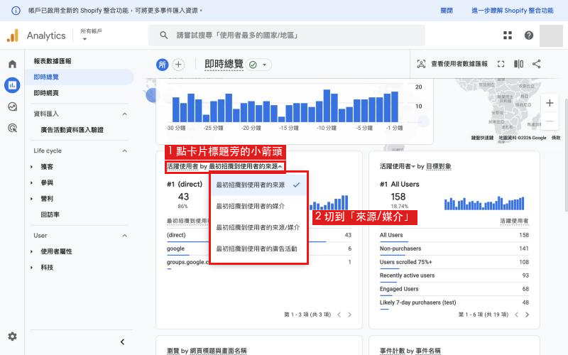

執行準備：每個渠道一份可上線素材與追蹤檢查
把渠道配置轉成能交接、能驗證，也能在問題發生時安全回復的素材包。
學習目標
能為每份素材寫出來源版本、受眾、核心訊息、CTA、落地頁、UTM、事件、負責人、核准者與回復方式
能沿旅程走查三個事件、參數與三種同意情境，並分開離線審查與平台驗證
能用內容、體驗、量測、營運四層品質檢查（QA）決定素材能不能上線
本節完成物
素材包與追蹤檢查表
把渠道配置轉成能交接、能驗證，也能在問題發生時安全回復的素材包。
10-2 你們已經排好「哪個渠道負責旅程哪一段、CTA 是什麼、下一站去哪、記錄哪個事件」。這一節不再想新點子，而是把那張渠道配置表變成一包能交給別人執行、能驗證、出錯時能安全撤回的素材。
判斷這一節有沒有做好，只問三件事：
做完的東西有三個去處：企劃書第 8 段第 4 頁；10-4 的 A3「執行與追蹤」區塊（講師講評會看「素材、CTA、事件與回復方式可執行」）；全課主題作業的第三項「素材包與追蹤檢查表」。
| 詞 | 一句話 | 在哪一步用到 |
|---|---|---|
| 素材包 | 一組能從來源一路查到上線證據的執行項目 | 步驟一 |
| 來源版本 | 這份素材依據哪份文件的哪一版寫成 | 步驟一 |
| 負責人 | 動手做這份素材、出問題要修的人 | 步驟一 |
| 核准者 | 有權同意這份素材發布的人 | 步驟一 |
| 回復方式 | 出錯時停止影響、並恢復前一個可用版本的做法 | 步驟一、三 |
| UTM | 加在連結後面的標籤，告訴 GA4 這位訪客從哪個來源、哪種媒介、哪個活動來 | 步驟一、二 |
| 事件 | 網站記錄「使用者實際做了某個動作」的一筆資料，例如 booking_start |
步驟一、二 |
| 走查 | 照使用者會走的路一步步操作，對照「應該出現的事件」和「實際出現的事件」 | 步驟二 |
| 同意狀態 | 訪客對追蹤 Cookie 的選擇：拒絕、接受，或接受後改回只保留必要 | 步驟二 |
| 離線審查通過 | 規格和測試路徑已經對過，但還沒在平台上看到證據 | 步驟二 |
| 平台已驗證 | 有 Tag Assistant 預覽與 GA4 DebugView 的時間戳紀錄 | 步驟二 |
| 練習環境證據 | 證據來自課程的預約練習頁，不是你們自己的網站 | 步驟二 |
| 未指派 | GA4 找不到符合的管道規則時，流量被放進的分類 | 步驟一 |
| 交接測試 | 由非原作者從索引找到來源、預覽、證據與回復步驟 | 步驟三 |
素材包不是從零寫，是把前面做過的東西接起來。開工前把這五份找出來，每份旁邊標三件事：來源版本（第幾版或哪天的版本）、可取得位置（企劃書第幾段、哪個雲端資料夾）、負責角色（組上誰管這份）。
| 輸入 | 內容 | 你們組通常在哪裡 |
|---|---|---|
| 渠道配置表 | 每個渠道負責的旅程任務、CTA、下一站與先決條件 | 10-2，企劃書第 8 段第 2 頁 |
| 各渠道素材草稿 | 社群、搜尋、廣告、Email、LINE（或其他通訊軟體官方帳號）已完成的內容與版本 | M4 社群、M5 搜尋、M8 廣告、M9 名單與 Email（企劃書第 3、4、6、7 段） |
| 追蹤規格與預覽驗證紀錄 | 事件名稱、觸發、參數、同意狀態與證據 | M6、M7（企劃書第 5 段） |
| UTM 命名表 | 來源、媒介、活動與素材如何命名 | M6、M7（企劃書第 5 段） |
| AI 使用紀錄 | AI 建議、人工修改與採納理由（保留摘要，不貼整段對話） | 企劃書附錄 |
找斷點：拿渠道配置表一列一列看，問兩句：
只要有一列答不出來，先回 10-2 把策略補完，不要用多做幾份素材把洞蓋過去。素材做得再漂亮，使用者點完不知道去哪、去了也記不到，這份素材就無法驗收。
要做的事：每個你們採用的渠道選一份素材，填完十四個欄位。沒採用的渠道不用填。
下表用山徑咖啡社群那一列當示範（品牌包第 16 節原文值）。
| # | 欄位 | 寫什麼 | 山徑咖啡社群列 | 常見寫錯 |
|---|---|---|---|---|
| 1 | 渠道 | 渠道配置表裡的渠道名稱 | 社群 | 寫成平台帳號名稱，跟配置表對不起來 |
| 2 | 素材名稱與位置 | 這份素材叫什麼、放在哪個資料夾 | 同條件比較短片大綱／社群素材區 | 只寫名稱，別人找不到檔案 |
| 3 | 來源版本 | 依據哪幾份文件寫成 | 兩週內容月曆、社群摘要與渠道配置頁 | 寫「參考前面作業」這種查不到的說法 |
| 4 | 受眾 | 這份素材給誰看 | 阿傑型升級者 | 寫「所有人」 |
| 5 | 核心訊息 | 使用者看完應該記住的一句話 | 同一個人、同一水量、同一比較欄位 | 塞三、四個賣點 |
| 6 | CTA | 請使用者做的下一步 | 到商品頁看完整比較 | 跟渠道配置表的 CTA 不一致 |
| 7 | 落地頁 | 點下去會到哪一頁 | 三款商品比較頁 | 只寫「官網」 |
| 8 | UTM | 這份素材連結要帶的完整 UTM | utm_source=instagram&utm_medium=organic_social&utm_campaign=compare-before-upgrade&utm_content=carousel-01 |
自己臨時取名，沒照 UTM 命名表 |
| 9 | 事件 | 使用者到落地頁後，要記錄的實際動作 | comparison_open |
寫成「點擊按鈕」 |
| 10 | 負責人 | 做這份素材、出問題要修的人 | 社群負責人 | 寫整組 |
| 11 | 期限 | 第幾週完成 | 第 2 週 | 空白 |
| 12 | 核准者 | 有權同意發布的人 | 內容負責人 | 跟負責人寫同一個人卻沒說明 |
| 13 | 狀態 | 目前卡在哪 | 草稿完成；發布待核准 | 寫「完成」，看不出能不能上線 |
| 14 | 回復方式 | 出錯時怎麼停、恢復到哪一版 | 保留前一版素材；連結或宣稱未通過就撤下 | 寫「再修改」 |
幾個寫法上的提醒：
一句話：負責人是「做的人」，核准者是「說可以發的人」。
| 負責人 | 核准者 | |
|---|---|---|
| 做什麼 | 寫素材、改素材、跑檢查、出問題時動手修 | 看過後決定「可以發布」或「不行」 |
| 問自己 | 這份東西出錯，誰要去改？ | 誰有權說「好，發」？ |
| 山徑咖啡例子 | 社群素材由社群負責人做 | 由內容負責人核准 |
山徑咖啡六份素材裡，負責人與核准者都是不同角色，例如搜尋廣告是「廣告負責人」做、「專案負責人」核准；預約確認信是「名單負責人」做、「門市營運負責人」核准。
你們組人少時，一個人可能身兼好幾個角色。建議至少讓「核准者」不是同一份素材的「負責人」，這樣核准才有第二雙眼睛；真的做不到，就在核准者欄寫清楚並註明原因，交給組上決定。欄位寫角色（例如「社群負責人」），再在旁邊或企劃書附註「社群負責人＝某某組員」，之後換人也不用改整張表。
判斷標準：一個沒參與製作的組員，只看這一格，就知道什麼情況要停、要做什麼動作、恢復到哪一版。
寫回復方式時檢查有沒有這三樣：
| 寫法 | 問題 |
|---|---|
| 有問題再修改 | 沒有觸發條件，也沒說修之前怎麼辦，錯的素材會一直掛著 |
| 保留前一版素材；連結或宣稱未通過就撤下 | 三樣都有，可以照做 |
| 保留暫停開關與原素材；事件未驗證就不啟動 | 三樣都有，而且把「不啟動」當成預設 |
各渠道的回復方式慣例（課程規定）：
| 渠道 | 回復方式要包含 |
|---|---|
| 網頁 | 保留前版（例如山徑咖啡 SEO：保留現行商品頁，未通過核准就不替換） |
| 廣告 | 保留暫停開關與原素材 |
| 先跑測試名單，並保留可暫停的序列 | |
| 社群、LINE／通訊軟體 | 寫下撤除方式與修正版負責人 |
一份素材的四個欄位要講同一件事：
山徑咖啡的搜尋廣告是一條完整的例子：核心訊息「先比較，再預約 20 分鐘試握」→ CTA「預約 20 分鐘試握」→ 落地頁「商品頁與預約表單」→ 事件 booking_start、booking_complete。
這裡最容易出錯的是「事件」。**按鈕被點了，不等於流程完成。**山徑咖啡把預約拆成兩個事件：
| 事件 | 什麼時候記錄 | 為什麼這樣定 |
|---|---|---|
booking_start |
預約表單第一個欄位首次取得焦點（游標第一次點進去） | 代表使用者真的開始填，不是只看到表單 |
booking_complete |
必填欄位通過檢查並送出 | 只點送出鈕但漏填必填欄位，不算完成 |
你們組也一樣：「完成隔日早餐預訂」應該記在預訂真的送出成功的那一刻，而不是使用者按下「預訂」按鈕的那一刻。
GA4 有一套「預設管道群組」，依連結帶的**來源（utm_source）與媒介（utm_medium）**自動歸類。下面是本單元會碰到的規則（整理自 Google Analytics 說明，2026-11-13 查證；規則不分大小寫）：
| GA4 管道 | 規則（簡化） |
|---|---|
| 付費搜尋 | 來源屬於 Google 列出的搜尋網站，且媒介含 cp、或等於 ppc／retargeting、或以 paid 開頭（例如 cpc） |
| 付費社群 | 來源屬於 Google 列出的社群網站，且媒介符合上一列同樣的付費規則（例如 paid_social） |
| 自然社群 | 來源屬於社群網站清單，或媒介是 social、social-network、social-media、sm、social network、social media 其中之一 |
| 電子郵件 | 來源或媒介是 email、e-mail、e_mail、e mail 其中之一 |
| 簡訊 | 來源或媒介完全等於 sms |
| 未指派 | 沒有任何規則符合 |
拿山徑咖啡品牌包的 UTM 對一次：
| 素材 | 來源＋媒介 | 預期管道 | 理由 |
|---|---|---|---|
| Instagram 貼文 | instagram＋organic_social |
自然社群 | organic_social 不在社群媒介清單裡，但 instagram 是社群網站來源 |
| Google 搜尋廣告 | google＋cpc |
付費搜尋 | 搜尋來源＋cpc |
| Meta 廣告 | facebook＋paid_social |
付費社群 | 社群來源＋以 paid 開頭的媒介 |
email-list＋email |
電子郵件 | 媒介是 email |
|
| LINE 推播 | line＋messaging |
自然社群 | messaging 不在社群媒介清單裡，但 line 是社群網站來源 |
LINE 的處理方式是課程規定：**保留原始值 utm_medium=messaging，並記錄 GA4 實際歸到哪裡。**不要為了讓報表好看臨時改名，因為同一活動的 UTM 一改，前後資料就對不起來了。Meta 廣告也一樣，沿用品牌包的 utm_source=facebook&utm_medium=paid_social。
你們組若有用通訊軟體官方帳號推播，同樣在 UTM 欄照命名表填，然後在追蹤檢查表或備註寫「預期管道：＿＿，實際結果：＿＿」。
素材包的價值在於讓問題提早被看見。仔細看山徑咖啡兩封 Email：
utm_campaign=booking-reminder&utm_content=cta-01utm_campaign=booking-reminder&utm_content=cta-01兩封信的 UTM 一模一樣。品牌包的命名規則說「需要區分素材時才加 utm_content」，這兩封信目的、受眾、落地頁都不同，報表上卻分不出是哪封信帶來的流量。這屬於步驟三 QA 的「量測」層問題。正確的處理不是你自己動手改掉，而是在 QA 結果寫下問題，交給量測負責人決定要不要改，改了就同步更新命名表並重跑連結與 UTM 檢查。
你們組的索引填完後，也用同樣的眼光掃一遍：有沒有兩份素材的 UTM 完全一樣、CTA 跟落地頁對不上、事件寫成「點擊」？
以下只示範怎麼想，括號裡的實際內容要換成你們組作業裡真的寫過的東西；沒有寫過的欄位不要現場編。
| 欄位 | 怎麼想 |
|---|---|
| 渠道 | 照你們渠道配置表，例如「社群」 |
| 素材名稱與位置 | （M4 那支短影音腳本或某則貼文的名稱）／（共用雲端的資料夾名稱） |
| 來源版本 | （兩週內容月曆第幾版）、渠道配置頁 |
| 受眾 | （你們在顧客心理段落定義的那一型人，例如想前一天選好早餐的上班族） |
| 核心訊息 | 一句話，能回到顧客原話，例如「前一天就能看到隔天口味並先訂好」 |
| CTA | 照渠道配置表 |
| 落地頁 | 隔日早餐預訂頁 |
| UTM | 照你們的 UTM 命名表填完整字串 |
| 事件 | 照 M7 事件規格，例如「開始填預訂」「完成隔日早餐預訂」對應的事件名稱 |
| 負責人／核准者 | 寫角色，兩者盡量不同人 |
| 期限 | 第幾週 |
| 狀態 | 例如「草稿完成；落地頁缺售完替代方式，待補」 |
| 回復方式 | 例如「保留前一版貼文；落地頁未補售完說明前不發布；撤除由社群負責人執行」 |
要做的事：照使用者會走的路，在網頁上實際操作三個事件，對照預期與實際，填好九欄檢查表；再用三種同意情境各跑一次。你們組沒有網站，就用山徑咖啡預約練習頁，證據標「練習環境證據」。
這是最容易寫錯的地方。課程的原則是：**不把離線結果寫成平台驗證。**照你手上實際有的東西對號入座：
| 你手上有什麼 | 證據狀態欄怎麼寫 |
|---|---|
| 只把事件規格和測試路徑對過，還沒打開網頁操作 | 離線審查通過 |
| 在練習頁操作，頁面下方監看區看到事件，但沒有 Tag Assistant 預覽與 DebugView 的時間戳 | 練習環境證據；離線審查通過，平台待驗證 |
| 在練習頁載入自己組的 GTM 容器，Tag Assistant 預覽與 GA4 DebugView 都看到事件並記下時間戳 | 練習環境證據；平台已驗證（僅限練習頁） |
| 在自己的網站上，Tag Assistant 預覽與 DebugView 都有時間戳紀錄 | 平台已驗證 |
為什麼練習頁就算有平台證據也要標「練習環境」？因為練習頁證明的是「你們的容器設定能正確接到這三個事件」，不是「你們的隔日早餐預訂頁已經能記錄」。等你們真的有預訂頁，要在那一頁重新走查。
你們組的 GTM 容器 ID：以 GTM- 開頭，後面接 4～10 個大寫英文字母或數字。講義或課程頁上的 GTM-XXXXXXX 是範例，不能用。容器要是你們有權限的測試容器，而且裡面要有 M7 做過的 GA4 設定（Google 代碼與事件代碼）。
一組 UTM 實際值：從你們 UTM 命名表挑一列，例如社群貼文那一列。
組好的練習頁網址：在課程網站的練習頁網址（.../assets/practice/booking-practice.html）後面加上容器 ID 和 UTM，用 ? 接第一個、& 接後面的。格式：
（練習頁網址）?gtm=你們的容器ID&utm_source=（來源）&utm_medium=（媒介）&utm_campaign=（活動）&utm_content=（素材）
山徑咖啡示範可以用社群那組值：
（練習頁網址）?gtm=GTM-你們的ID&utm_source=instagram&utm_medium=organic_social&utm_campaign=compare-before-upgrade&utm_content=carousel-01
九欄檢查表：開一份 Google 試算表，第一列打好九個欄名（見下方「九欄怎麼填」），走查時邊做邊填。
練習頁不會送出姓名或 Email，也不會連到外部 LINE；頁面上的按鈕只是把課堂事件推送出去。填表單時仍然用假資料就好，例如姓名「測試」、Email test@example.com。
走查會同時用到三個畫面，先排好就不會找不到：
| 畫面 | 用途 | 怎麼打開 |
|---|---|---|
| A. Tag Assistant 分頁 | 看事件時間軸、代碼有沒有觸發、同意狀態 | 從 GTM 按「預覽」後自動開啟 |
| B. 練習頁視窗 | 你實際操作的頁面；頁面下方有「網站推送的事件（新到舊，最多 5 筆）」監看區 | Tag Assistant 連線後自動開新視窗或新分頁 |
| C. GA4 DebugView | 看 GA4 有沒有收到事件、記下時間戳 | GA4 →「管理」→「資料顯示」→「DebugView」 |
建議把 B 放螢幕左半邊、C 放右半邊，A 留在原瀏覽器分頁需要時切過去；試算表可以開在另一個分頁或另一台裝置上。
?gtm= 與 UTM），按 Connect（連結）。Tag Assistant 會在網址加上除錯參數，讓這台裝置進入 GA4 的除錯模式，DebugView 才看得到你的事件。如果練習頁因為這個參數打不開，可以在步驟 3 取消勾選「Include debug signal in the URL」，但這樣 DebugView 可能看不到事件，要在檢查表註明。
這是三條同意路徑之前的第一個檢查。練習頁預設四項同意（ad_storage、analytics_storage、ad_user_data、ad_personalization）都是拒絕。
如果 Consent 分頁是空的，代表頁面沒有實作同意模式；如果有代碼在預設同意之前就觸發，記在檢查表並交給量測負責人。
每條路徑都做同一組三個動作：開啟比較表 → 點預約表單第一個欄位 → 填好必填欄位並按「完成預約練習」。重新整理頁面會回到預設拒絕，所以每條路徑開始前都先重新整理。
路徑一：預設拒絕
路徑二：接受全部
路徑三：接受後更新為只保留必要
如果按完「接受全部」後橫幅收起來、頁面上找不到「只保留必要」，不要用重新整理代替，因為重新整理是回到預設，不是「更新」。在檢查表的同意狀態欄寫「頁面無法在接受後更新同意」，交給量測負責人或課堂上問講師。
在路徑二順便做這三個小測試，結果填「是否重複」欄：
| 事件 | 怎麼測 | 正常應該是 |
|---|---|---|
comparison_open |
開啟比較表一次 | 只出現一筆。規格是「由收合變成展開時」記錄，所以收起來再打開會再記一筆，這不算重複；一次展開出現兩筆才算重複 |
booking_start |
點第一個欄位，點到別處，再點回第一個欄位 | 只在第一次出現，因為規格是「首次取得焦點」 |
booking_complete |
先不選偏好時段直接按送出，再全部填好按送出 | 漏填時不應出現；填好送出後出現一筆 |
最後一個測試就是在驗證「按鈕點擊本身不記為完成」。如果漏填也出現 booking_complete，代表事件記到的是點擊，不是完成，這是量測層不通過。
| 欄位 | 寫什麼 |
|---|---|
| 步驟 | 使用者做的動作，例如「展開三款比較表」 |
| 預期事件 | 規格上應出現的事件名稱 |
| 實際事件 | 你實際看到的事件名稱；沒看到就寫「未出現」 |
| 參數 | 看到的參數與值 |
| 是否重複 | 否／是（附說明） |
| 同意狀態 | 三條路徑各自的結果 |
| 證據位置 | 截圖或紀錄放在哪個資料夾、檔名 |
| 證據狀態 | 照上面「證據算哪一級」那張表寫 |
| 修正負責人 | 結果不符時誰去修 |
練習頁推送的事件與參數（頁面原值），用來對照「參數」欄：
| 動作 | 事件 | 參數 |
|---|---|---|
| 開啟比較表 | comparison_open |
page_type: booking_practice、product_count: 3 |
| 表單第一個欄位首次取得焦點 | booking_start |
form_id: trial_booking、page_type: booking_practice |
| 按「完成預約練習」送出 | booking_complete |
form_id: trial_booking、preferred_slot（平日下午／平日晚上／週末下午） |
頁面還有「推送加入 LINE 事件」（line_join），本單元走查不用。
填好的一列大概長這樣（時間戳與檔名換成你實際看到的）：
| 步驟 | 預期事件 | 實際事件 | 參數 | 是否重複 | 同意狀態 | 證據位置 | 證據狀態 | 修正負責人 |
|---|---|---|---|---|---|---|---|---|
| 必填欄位通過並送出表單 | booking_complete |
booking_complete |
form_id: trial_booking、preferred_slot: 週末下午 |
否；漏填時未出現 | 拒絕：DebugView 未出現；接受：出現；更新為必要：未出現 | 走查截圖資料夾／（檔名） | 練習環境證據；平台已驗證（僅限練習頁），DebugView 時間戳（填入） | 量測負責人 |
你們組要多做的一件事：練習頁的事件是山徑咖啡的，不是你們的。在「步驟」欄後面或備註加一句「對應我們的哪個事件」，例如練習頁的 booking_complete 對應你們 M7 規格裡「完成隔日早餐預訂」的事件。這樣這張表才連得回你們的素材包。
在 DebugView 點 page_view（如果你們的容器有送），看 page_location 參數裡是否帶著你加的 UTM。
到 GA4「報表」→「即時總覽」，找標題為「活躍使用者 by 最初招攬到使用者的來源」的卡片，點標題旁的小箭頭，切換到「最初招攬到使用者的來源/媒介」，看是否出現你的 utm_source、utm_medium。

即時報表這張卡只顯示已經過一般報表處理的使用者，這次帶 UTM 進站的測試通常不會顯示在這裡，照實記錄看到的值即可。
對照前面的 GA4 管道規則，把「預期管道」與「實際看到的值」寫進檢查表備註。LINE 或通訊軟體的 messaging 若顯示未指派，就寫「保留原始值；結果：未指派」。
DebugView 開著時，你的測試資料也會進到 GA4。M7 若已設定排除開發人員流量就沿用；沒有的話，在企劃書註明哪段時間是測試流量，之後解讀資料時避開。
每份素材從上到下查四層。任一層未通過，該素材維持草稿或暫停。
| 層 | 查什麼 | 山徑咖啡示範結果 |
|---|---|---|
| 1. 內容 | 宣稱、價格、服務時間與產品差異能不能回查來源 | 離線審查通過；未提供的耐用年限與效果宣稱已刪除 |
| 2. 體驗 | 手機裁切、連結、表單、確認訊息與回復方式 | 待實際頁面預覽；未通過前素材維持草稿 |
| 3. 量測 | 事件、參數、UTM、三種同意情境與重複事件 | 規格已核對；平台待驗證，未驗證前不解讀成效 |
| 4. 營運 | 預算、寄送資格、負責人、核准者與客服承接 | 待補實際人選與核准；缺一項就不啟動該素材 |
為什麼要照順序？因為前一層不過，後一層查了也白查：宣稱錯了（內容），手機版排得再好也不能發；頁面在手機上按不到表單（體驗），事件當然不會發生。
每層的判斷提示：
山徑咖啡營運層的實例：LINE 若向 1,180 位好友各群發一次，會超過輕用量方案每月 200 則，所以 LINE 素材的回復方式寫「額度或客服承接未確認就不群發」，狀態是「分眾與訊息額度待確認」。Email 這一層則要看名單：門市預約留下的 420 個 Email 中，只有 240 筆有獨立勾選的行銷同意，其餘只供預約聯繫；三個名單來源可能重複，未去重前不能相加當成可寄送人數。
素材包裡交易信與行銷信要分成兩列，因為規則不同：
| 交易信（例：預約確認信） | 行銷信（例：比較表歡迎序列） | |
|---|---|---|
| 寄給誰 | 有預約聯繫依據的人 | 有有效行銷同意紀錄的人 |
| 退訂 | 維持必要通知 | 提供一鍵退訂 |
| 回復方式 | 資訊錯誤就停止寄送，改回人工確認 | 先寄測試名單、保留暫停序列與一鍵退訂；異常立即停止 |
Google 對寄信到個人 Gmail 帳戶的大量寄件者（24 小時內約 5,000 封以上）要求：行銷與促銷信必須支援一鍵退訂，建議在 48 小時內處理退訂；交易信不在此要求內，Google 舉的例子包含預約確認與表單送出確認（Google Workspace 說明，2026-11-13 查證）。你們組的寄送量多半不到這個門檻，但課程的規則是所有行銷信都提供一鍵退訂，照課程規則做。
另外，素材只要有更新，就要同步重跑連結、UTM、事件及同意檢查，不能沿用舊版的檢查結果。
找一位沒有參與這份素材製作的組員，只給他素材包索引和追蹤檢查表，請他找出四樣東西：
原作者在旁邊只看不說話。把結果記成一個小表：
| 素材 | 找到了 | 沒找到或看不懂 | 要改哪一欄 | 誰改 |
|---|
找不到的地方不是測試的人不夠細心，而是索引寫得不夠清楚。改完那一欄，交接測試才算完成。
AI 只用在一個地方：小組已經完成素材與人工 QA 之後，請 AI 對照專案目標與渠道配置，檢查素材有沒有偏離策略。ChatGPT、Claude 或 Gemini 任一即可。
提示詞（課程原文）：
「六份素材」是山徑咖啡的數量，你們組改成實際的份數。最後一行的括號換成你們的專案目標（10-1）、渠道配置（10-2）、素材包索引與四層 QA 結果。
拿到 AI 的回答後：
AI 使用紀錄八欄，山徑咖啡示範其中一列：
| 日期 | 內容／任務 | 工具 | 提示詞版本 | AI 建議摘要 | 人工修改 | 採納／不採納理由 | 待重查項目 |
|---|---|---|---|---|---|---|---|
| 課堂日 | 試握 CTA 草稿 | 課堂允許的生成式 AI | v1 | 產生「立即找到命定手沖壺」等 CTA | 改為「預約 20 分鐘試握」 | 原句補造效果；修正版直接引用門市試握服務事實 | 正式頁面的按鈕位置與事件觸發 |
重點在「人工修改」和「理由」兩欄：要看得出人做了什麼判斷。只寫摘要，不貼整段對話。
單元頁要求先核對所有欄位與證據狀態。逐項打勾：
素材包索引
追蹤檢查表
booking_complete 沒出現QA 與交接
| 狀況 | 怎麼辦 |
|---|---|
| 練習頁打開了，但 Tag Assistant 一直沒有 Connected | 確認網址裡的 gtm= 是你們自己的容器 ID，不是範例 ID；確認是從 GTM 的「預覽」打開 Tag Assistant |
| 練習頁監看區有事件，DebugView 卻是空的 | 先看同意狀態：預設拒絕時本來就看不到。按「接受全部」後還是空的，檢查 DebugView 左上的裝置選單是否選到你的裝置，以及你們容器裡有沒有 M7 做的 GA4 事件代碼 |
| Tag Assistant 有事件，但 GA4 事件代碼列在「Tags Not Fired」【待實機確認】 | 點開那個代碼看原因，常見是觸發條件的事件名稱打錯，或被同意狀態擋住【待實機確認】。記在檢查表，交給量測負責人 |
| 按完「接受全部」找不到「只保留必要」 | 不要重新整理代替；照「路徑三」的說明記錄並請教講師 |
| 一份素材對應兩個事件 | 正常，例如搜尋廣告對應 booking_start、booking_complete。事件欄兩個都寫 |
| 渠道配置表某一列沒有下一站 | 回 10-2 補，不要先做素材 |
練習頁不是你們的產品，但你做的事是真的：你沒有在紙上想像事件，而是用自己組的追蹤容器實際接住事件，並分清楚證據等級。可以這樣講（照你實際做到的程度刪改）：
這段話裡每一句都能拿出企劃書第 8 段第 4 頁的表格當證據。
素材包與追蹤檢查交給 10-4，整理成 A3 的「執行與追蹤」區塊：列出代表素材、CTA、事件鏈、負責人、核准者與回復方式，讓讀者能判斷這個計畫是否具備啟動條件。
介面名稱以查證當時的英文介面為準，中文介面翻譯可能略有不同；Google 會調整介面，找不到按鈕時以上述說明頁的最新版本為準。山徑咖啡內容為課堂模擬資料，不是真實品牌成效。